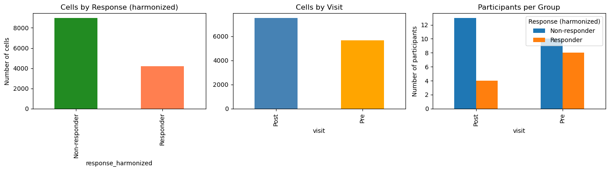
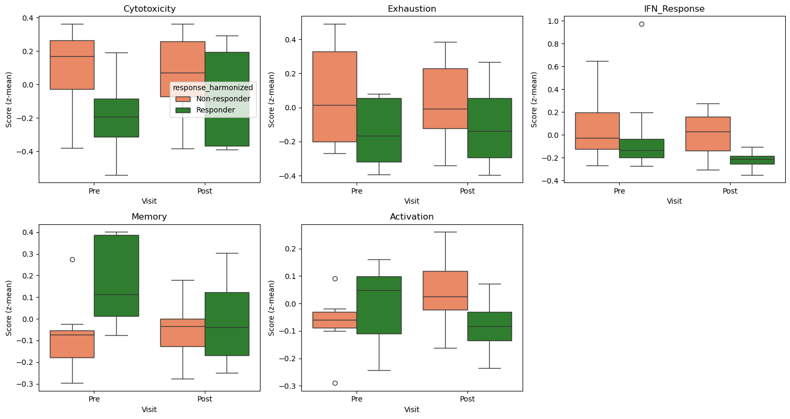
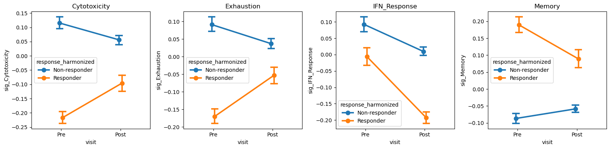
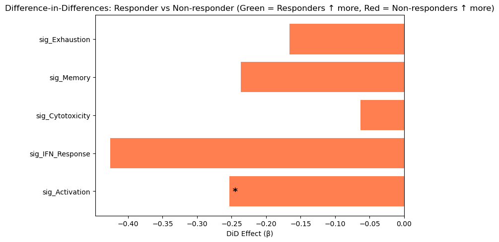

Immunotherapy Response in Melanoma: Longitudinal Single-Cell Analysis
Dataset: Sade-Feldman et al., Cell 2018 (GSE120575)
This notebook demonstrates how to analyze longitudinal single-cell data from a clinical immunotherapy study, comparing immune dynamics between responders and non-responders to anti-PD-1 therapy.
Background
Sade-Feldman et al. (Cell 2018) profiled tumor-infiltrating immune cells from melanoma patients before and during anti-PD-1 checkpoint inhibitor therapy. This landmark study identified transcriptional programs associated with clinical response.
Study Design
This is a prospective longitudinal study:
Patients received anti-PD-1 immunotherapy (pembrolizumab or nivolumab)
Tumor biopsies collected Pre-treatment (baseline) and Post-treatment (on therapy)
Response assessed by RECIST criteria: Complete/Partial Response vs Progressive Disease
Key biological questions:
Do responders and non-responders have different baseline immune states?
How does the immune microenvironment change with therapy?
Are there response-specific trajectories (Difference-in-Differences)?
Analysis Strategy
Cross-sectional comparisons: Responder vs Non-responder at each timepoint
Within-arm longitudinal: Pre→Post changes within each response group
Difference-in-Differences (DiD): Do responders change differently than non-responders?
Statistical considerations:
Participant-level aggregation to avoid pseudoreplication
FDR correction for multiple testing
Bootstrap inference for small sample sizes
1. Setup
[1]:
# Imports - consolidated
import warnings
warnings.filterwarnings('ignore', category=FutureWarning)
warnings.filterwarnings('ignore', category=UserWarning)
import pandas as pd
import numpy as np
import scipy.sparse as sp
import matplotlib.pyplot as plt
import seaborn as sns
import scanpy as sc
from scipy.stats import mannwhitneyu, wilcoxon, ttest_ind
from statsmodels.stats.multitest import multipletests
import sctrial as st
# Configuration
MIN_GENES_FOR_SCORE = 5
MIN_PARTICIPANTS_FOR_COMPARISON = 3
FDR_ALPHA = 0.25
SEED = 42
RESPONSE_COL = "response_harmonized"
pd.options.mode.chained_assignment = None
print(f"sctrial version: {st.__version__ if hasattr(st, '__version__') else 'dev'}")
sctrial version: 0.2.1.dev1
2. Data Loading and Processing
[2]:
# Dataset loader (from sctrial)
from sctrial.datasets import load_sade_feldman
2.1 Load processed AnnData
We harmonize response labels at the participant level (majority label) because a few participants have mixed response annotations across cells/samples. Mixed cases are reported below.
[3]:
# Load data - using full dataset for reliable longitudinal analysis
adata = load_sade_feldman(max_cells_per_participant_visit=None) # No subsampling
# Harmonize response labels at participant level
resp_counts = (
adata.obs
.groupby(["participant_id", "response"], observed=True)
.size()
.reset_index(name="n_cells")
)
resp_n = resp_counts.groupby("participant_id")["response"].nunique()
mixed_ids = resp_n[resp_n > 1].index.tolist()
dominant_response = (
resp_counts
.sort_values(["participant_id", "n_cells"], ascending=[True, False])
.drop_duplicates("participant_id")
.set_index("participant_id")["response"]
)
adata.obs[RESPONSE_COL] = adata.obs["participant_id"].map(dominant_response)
missing_resp = adata.obs[RESPONSE_COL].isna().sum()
print("")
print("=== Dataset Summary ===")
print(f"Cells: {adata.n_obs:,}")
print(f"Genes: {adata.n_vars:,}")
print(f"Participants: {adata.obs['participant_id'].nunique()}")
print(f"Original response labels: {adata.obs['response'].unique().tolist()}")
print(f"Harmonized response labels: {adata.obs[RESPONSE_COL].unique().tolist()}")
print(f"Visits: {adata.obs['visit'].unique().tolist()}")
print("")
print("=== Response Label Consistency ===")
print(f"Participants with mixed response labels: {len(mixed_ids)}")
if mixed_ids:
print("Using participant-level majority response for analyses.")
display(
resp_counts[resp_counts["participant_id"].isin(mixed_ids)]
.sort_values(["participant_id", "n_cells"], ascending=[True, False])
)
if missing_resp:
print(f"WARNING: {missing_resp} cells are missing harmonized response labels.")
# Detailed pairing analysis
print("")
print("=== Longitudinal Pairing Analysis ===")
participant_visits = adata.obs.groupby("participant_id")["visit"].apply(set).reset_index()
participant_visits["has_Pre"] = participant_visits["visit"].apply(lambda x: "Pre" in x)
participant_visits["has_Post"] = participant_visits["visit"].apply(lambda x: "Post" in x)
participant_visits["is_paired"] = participant_visits["has_Pre"] & participant_visits["has_Post"]
# Add harmonized response info
participant_visits[RESPONSE_COL] = participant_visits["participant_id"].map(dominant_response)
print("")
print(f"Total participants: {len(participant_visits)}")
print(f" Pre only: {(participant_visits['has_Pre'] & ~participant_visits['has_Post']).sum()}")
print(f" Post only: {(~participant_visits['has_Pre'] & participant_visits['has_Post']).sum()}")
print(f" Both (paired): {participant_visits['is_paired'].sum()}")
paired_by_resp = participant_visits[participant_visits["is_paired"]].groupby(RESPONSE_COL).size()
print("")
print("Paired participants by response (harmonized):")
for resp, count in paired_by_resp.items():
print(f" {resp}: {count}")
print("")
print(f"Obs columns: {sorted(adata.obs.columns.tolist())}")
Processed file parameters differ; reprocessing.
Processing raw data (this may take a minute)...
Using full dataset: 13,183 cells (no subsampling)
Saved processed file: /Users/omarm/Documents/Research/projects/sc-trialdiff/data/processed/sade_feldman_processed_v5.h5ad
Loaded Sade-Feldman dataset: 13,183 cells, 55,737 genes
=== Dataset Summary ===
Cells: 13,183
Genes: 55,737
Participants: 25
Original response labels: ['Responder', 'Non-responder']
Harmonized response labels: ['Responder', 'Non-responder']
Visits: ['Pre', 'Post']
=== Response Label Consistency ===
Participants with mixed response labels: 3
Using participant-level majority response for analyses.
| participant_id | response | n_cells | |
|---|---|---|---|
| 1 | P1 | Responder | 519 |
| 0 | P1 | Non-responder | 353 |
| 5 | P4 | Responder | 675 |
| 4 | P4 | Non-responder | 311 |
| 21 | P28 | Non-responder | 741 |
| 22 | P28 | Responder | 337 |
=== Longitudinal Pairing Analysis ===
Total participants: 25
Pre only: 8
Post only: 7
Both (paired): 10
Paired participants by response (harmonized):
Non-responder: 7
Responder: 3
Obs columns: ['Sample name', 'Unnamed: 11', 'Unnamed: 12', 'Unnamed: 13', 'Unnamed: 14', 'Unnamed: 15', 'Unnamed: 16', 'Unnamed: 17', 'Unnamed: 18', 'Unnamed: 19', 'Unnamed: 20', 'Unnamed: 21', 'Unnamed: 22', 'Unnamed: 23', 'Unnamed: 24', 'Unnamed: 25', 'Unnamed: 26', 'Unnamed: 27', 'Unnamed: 28', 'Unnamed: 29', 'Unnamed: 30', 'Unnamed: 31', 'Unnamed: 32', 'Unnamed: 33', 'Unnamed: 34', 'cell_type', 'characteristics: therapy', 'description', 'molecule', 'organism', 'participant_id', 'patient_raw', 'processed data file ', 'raw file', 'response', 'response_harmonized', 'source name', 'time_label', 'visit']
2.2 Quick exploratory summaries
[4]:
# Sample size summary
print("=== Sample Sizes ===")
print("")
# Cells per group
cell_counts = adata.obs.groupby([RESPONSE_COL, "visit"], observed=True).size().unstack(fill_value=0)
print("Cells per Response x Visit:")
display(cell_counts)
# Participants per group
participant_counts = (
adata.obs
.groupby([RESPONSE_COL, "visit"], observed=True)["participant_id"]
.nunique()
.unstack(fill_value=0)
)
print("")
print("Participants per Response x Visit:")
display(participant_counts)
# Visualize
fig, axes = plt.subplots(1, 3, figsize=(14, 4))
# Cells by response
adata.obs[RESPONSE_COL].value_counts().plot(
kind="bar", ax=axes[0], color=["forestgreen", "coral"]
)
axes[0].set_title("Cells by Response (harmonized)")
axes[0].set_ylabel("Number of cells")
# Cells by visit
adata.obs["visit"].value_counts().plot(
kind="bar", ax=axes[1], color=["steelblue", "orange"]
)
axes[1].set_title("Cells by Visit")
# Participants per group
participant_counts.T.plot(kind="bar", ax=axes[2])
axes[2].set_title("Participants per Group")
axes[2].set_ylabel("Number of participants")
axes[2].legend(title="Response (harmonized)")
plt.tight_layout()
plt.show()
=== Sample Sizes ===
Cells per Response x Visit:
| visit | Post | Pre |
|---|---|---|
| response_harmonized | ||
| Non-responder | 5760 | 3229 |
| Responder | 1762 | 2432 |
Participants per Response x Visit:
| visit | Post | Pre |
|---|---|---|
| response_harmonized | ||
| Non-responder | 13 | 10 |
| Responder | 4 | 8 |

3. Trial Design and Timepoint Strategy
[5]:
# Define study design
visit_col = "visit"
adata.obs[visit_col] = adata.obs[visit_col].astype(str)
visits = [v for v in ["Pre", "Post"] if v in adata.obs[visit_col].unique()]
print(f"Available visits: {visits}")
# Participant-level response mapping (harmonized)
participant_response = adata.obs.groupby("participant_id")[RESPONSE_COL].first()
# Check longitudinal pairing (participant level)
participant_summary = (
adata.obs.groupby("participant_id")[visit_col].apply(set).reset_index()
)
participant_summary["has_Pre"] = participant_summary[visit_col].apply(lambda x: "Pre" in x)
participant_summary["has_Post"] = participant_summary[visit_col].apply(lambda x: "Post" in x)
participant_summary["is_paired"] = participant_summary["has_Pre"] & participant_summary["has_Post"]
participant_summary[RESPONSE_COL] = participant_summary["participant_id"].map(participant_response)
paired_ids = set(participant_summary.loc[participant_summary["is_paired"], "participant_id"])
n_paired = len(paired_ids)
# Paired participants by response (harmonized)
paired_by_response = (
participant_summary[participant_summary["is_paired"]]
.groupby(RESPONSE_COL)
.size()
.to_dict()
)
paired_ids_by_response = {
arm: set(
participant_summary[
(participant_summary["is_paired"]) & (participant_summary[RESPONSE_COL] == arm)
]["participant_id"]
)
for arm in ["Responder", "Non-responder"]
}
print("")
print("Longitudinal pairing:")
print(f" Total paired participants (Pre + Post): {n_paired}")
print(f" Paired Responders: {paired_by_response.get('Responder', 0)}")
print(f" Paired Non-responders: {paired_by_response.get('Non-responder', 0)}")
# Check if DiD analysis is feasible
MIN_PAIRED_PER_ARM = 3
can_do_did = (
paired_by_response.get("Responder", 0) >= MIN_PAIRED_PER_ARM and
paired_by_response.get("Non-responder", 0) >= MIN_PAIRED_PER_ARM
)
if can_do_did:
print("")
print(f" DiD analysis is feasible (>={MIN_PAIRED_PER_ARM} paired per arm)")
else:
print("")
print(f" WARNING: DiD analysis may be underpowered (<{MIN_PAIRED_PER_ARM} paired in one arm)")
# Define trial design for sctrial
# Note: "Responder" is the group of interest (like "treated" in a trial context)
design = st.TrialDesign(
participant_col="participant_id",
visit_col=visit_col,
arm_col=RESPONSE_COL,
arm_treated="Responder", # Group of primary interest
arm_control="Non-responder", # Comparison group
celltype_col="cell_type",
)
print("")
print("Design configured:")
print(f" Participant: {design.participant_col}")
print(f" Visit: {design.visit_col}")
print(f" Comparison: {design.arm_treated} vs {design.arm_control}")
Available visits: ['Pre', 'Post']
Longitudinal pairing:
Total paired participants (Pre + Post): 10
Paired Responders: 3
Paired Non-responders: 7
DiD analysis is feasible (>=3 paired per arm)
Design configured:
Participant: participant_id
Visit: visit
Comparison: Responder vs Non-responder
4. Immune Signatures
We define gene signatures relevant to immunotherapy response, based on the original Sade-Feldman paper and broader immuno-oncology literature:
Cytotoxicity: Effector function of CD8 T cells and NK cells - associated with anti-tumor immunity
Exhaustion: Dysfunctional T cell state - elevated exhaustion may predict poor response
IFN Response: Interferon-gamma signaling - can indicate immune activation
Memory: Memory T cell markers - may predict durable responses
Activation: T cell activation markers - early response indicator
[6]:
available_genes = set(adata.var_names)
# Define immunotherapy-relevant gene signatures
# Based on Sade-Feldman et al. and broader immuno-oncology literature
gene_signatures = {
"Cytotoxicity": [
"GZMB", "GZMA", "GZMH", "GZMK", "PRF1", "GNLY",
"IFNG", "NKG7", "KLRD1", "KLRB1", "FASLG"
],
"Exhaustion": [
"PDCD1", "LAG3", "HAVCR2", "TIGIT", "CTLA4",
"TOX", "ENTPD1", "CXCL13", "EOMES"
],
"IFN_Response": [
"ISG15", "IFI6", "IFIT1", "IFIT2", "IFIT3",
"MX1", "MX2", "STAT1", "OAS1", "IRF7"
],
"Memory": [
"IL7R", "TCF7", "LEF1", "CCR7", "SELL", "CD27", "CD28"
],
"Activation": [
"CD69", "CD38", "HLA-DRA", "ICOS", "CD44", "IL2RA"
],
}
# Filter to available genes and report coverage
print("Gene signature coverage:")
print("-" * 50)
filtered_signatures = {}
for name, genes in gene_signatures.items():
found = [g for g in genes if g in available_genes]
pct = len(found) / len(genes) * 100
status = "OK" if len(found) >= MIN_GENES_FOR_SCORE else "SKIP"
print(f"{name}: {len(found)}/{len(genes)} genes ({pct:.0f}%) [{status}]")
if len(found) >= MIN_GENES_FOR_SCORE:
filtered_signatures[name] = found
# Score gene sets using z-mean method
# zmean: z-score each gene across cells, then average z-scores
# This accounts for different expression scales across genes
if filtered_signatures:
adata = st.score_gene_sets(
adata,
filtered_signatures,
layer="log1p_tpm",
method="zmean", # Better than "mean" for combining genes
prefix="sig_"
)
print(f"\nScored {len(filtered_signatures)} signatures using zmean method")
else:
print(f"\nNo gene sets passed threshold (min_genes={MIN_GENES_FOR_SCORE})")
# Get signature columns
signature_cols = [c for c in adata.obs.columns if c.startswith("sig_")]
print(f"Signature scores: {signature_cols}")
# Filter out features with ~zero variance
features_use = []
if signature_cols:
df_feat = adata.obs[[design.participant_col, design.visit_col] + signature_cols].copy()
df_feat = df_feat[df_feat[design.visit_col].isin(visits)]
df_agg = df_feat.groupby([design.participant_col, design.visit_col], observed=True)[signature_cols].mean().reset_index()
for f in signature_cols:
if df_agg[f].std(ddof=1) > 1e-6:
features_use.append(f)
else:
print(f" Dropping {f}: near-zero variance")
print(f"\nFeatures for analysis: {features_use}")
Gene signature coverage:
--------------------------------------------------
Cytotoxicity: 11/11 genes (100%) [OK]
Exhaustion: 9/9 genes (100%) [OK]
IFN_Response: 10/10 genes (100%) [OK]
Memory: 7/7 genes (100%) [OK]
Activation: 6/6 genes (100%) [OK]
Scored 5 signatures using zmean method
Signature scores: ['sig_Cytotoxicity', 'sig_Exhaustion', 'sig_IFN_Response', 'sig_Memory', 'sig_Activation']
Features for analysis: ['sig_Cytotoxicity', 'sig_Exhaustion', 'sig_IFN_Response', 'sig_Memory', 'sig_Activation']
[7]:
# =============================================================================
# VERIFICATION: Compute TRUE paired participants based on valid signature scores
# =============================================================================
# This ensures consistency between reported pairing and actual analysis
print("=" * 60)
print("PAIRING VERIFICATION (based on valid signature scores)")
print("=" * 60)
# Aggregate all signature scores to participant-visit level
df_pv = (
adata.obs
.groupby([design.participant_col, design.visit_col, design.arm_col], observed=True)[features_use]
.mean()
.reset_index()
)
# For each feature, identify participants with valid (non-NaN) scores at BOTH visits
valid_paired = {} # feature -> set of participant IDs with valid Pre AND Post scores
for feat in features_use:
wide = df_pv.pivot(
index=design.participant_col,
columns=design.visit_col,
values=feat
)
if visits[0] not in wide.columns or visits[1] not in wide.columns:
valid_paired[feat] = set()
continue
# Participants with non-NaN at BOTH visits
mask = wide[visits[0]].notna() & wide[visits[1]].notna()
valid_paired[feat] = set(wide[mask].index)
# Get intersection across all features (participants valid for ALL features)
if features_use:
all_features_valid = set.intersection(*[valid_paired[f] for f in features_use])
else:
all_features_valid = set()
# Add arm info to determine pairing by response
participant_arm = adata.obs.groupby(design.participant_col)[design.arm_col].first()
valid_paired_by_response = {
arm: {pid for pid in all_features_valid if participant_arm.get(pid) == arm}
for arm in [design.arm_treated, design.arm_control]
}
print("")
print("Participants with valid Pre+Post scores for ALL features:")
print(f" Total: {len(all_features_valid)}")
for arm in [design.arm_treated, design.arm_control]:
n = len(valid_paired_by_response[arm])
print(f" {arm}: {n}")
# Compare with cell-level pairing
print("")
print("Comparison with cell-level pairing (from cell-11):")
for arm in [design.arm_treated, design.arm_control]:
cell_based = len(paired_ids_by_response.get(arm, set()))
score_based = len(valid_paired_by_response[arm])
diff = cell_based - score_based
if diff > 0:
print(f" {arm}: {cell_based} (cells) -> {score_based} (valid scores) | {diff} dropped due to NaN scores")
else:
print(f" {arm}: {cell_based} (cells) = {score_based} (valid scores) ✓")
# Show which participants were dropped (for debugging)
for arm in [design.arm_treated, design.arm_control]:
dropped = paired_ids_by_response.get(arm, set()) - valid_paired_by_response[arm]
if dropped:
print(f"")
print(f" Dropped {arm} participants: {sorted(dropped)}")
# Check why they were dropped
for pid in sorted(dropped):
for feat in features_use:
if pid not in valid_paired[feat]:
sub = df_pv[df_pv[design.participant_col] == pid][[design.visit_col, feat]]
pre_val = sub[sub[design.visit_col] == visits[0]][feat].values
post_val = sub[sub[design.visit_col] == visits[1]][feat].values
print(f" {pid}: {feat} Pre={pre_val}, Post={post_val}")
break
# Store for use in subsequent cells
VALID_PAIRED_BY_RESPONSE = valid_paired_by_response
VALID_PAIRED_ALL = all_features_valid
print("")
print("Using VALID_PAIRED_BY_RESPONSE for all subsequent analyses.")
============================================================
PAIRING VERIFICATION (based on valid signature scores)
============================================================
Participants with valid Pre+Post scores for ALL features:
Total: 10
Responder: 3
Non-responder: 7
Comparison with cell-level pairing (from cell-11):
Responder: 3 (cells) = 3 (valid scores) ✓
Non-responder: 7 (cells) = 7 (valid scores) ✓
Using VALID_PAIRED_BY_RESPONSE for all subsequent analyses.
5. Cross-Sectional Comparisons by Timepoint
Compare Responders vs Non-responders at each visit (Pre and Post).
Interpretation:
Positive beta = higher in Responders
Negative beta = higher in Non-responders
[8]:
print("=" * 60)
print("CROSS-SECTIONAL ANALYSIS: Responder vs Non-responder")
print("=" * 60)
cross_sectional_results = []
if features_use:
for v in visits:
# Check sample sizes
sub = adata[adata.obs[design.visit_col] == v]
n_per_arm = sub.obs.groupby(design.arm_col)[design.participant_col].nunique().to_dict()
n_resp = n_per_arm.get(design.arm_treated, 0)
n_nonresp = n_per_arm.get(design.arm_control, 0)
print("")
print(f"{v}: Responders={n_resp}, Non-responders={n_nonresp} participants")
if n_resp < MIN_PARTICIPANTS_FOR_COMPARISON or n_nonresp < MIN_PARTICIPANTS_FOR_COMPARISON:
print(f" Skipping: insufficient participants (need >={MIN_PARTICIPANTS_FOR_COMPARISON} per arm)")
continue
# Use sctrial's built-in function
res = st.between_arm_comparison(
adata,
visit=v,
features=features_use,
design=design,
aggregate="participant_visit",
standardize=True,
method="ols",
)
if not res.empty:
res["visit"] = v
cross_sectional_results.append(res)
# Display
display_cols = ["feature", "beta_arm", "p_arm", "FDR_arm", "n_units"]
print("")
print(f"Results at {v}:")
display(res[display_cols].round(4))
# Highlight significant
sig = res[res["FDR_arm"] < FDR_ALPHA]
if not sig.empty:
print(f" Significant (FDR<{FDR_ALPHA}): {sig['feature'].tolist()}")
else:
print("No features available for cross-sectional comparison.")
# Combine all results
if cross_sectional_results:
all_cross = pd.concat(cross_sectional_results, ignore_index=True)
else:
all_cross = pd.DataFrame()
============================================================
CROSS-SECTIONAL ANALYSIS: Responder vs Non-responder
============================================================
Pre: Responders=8, Non-responders=10 participants
Results at Pre:
| feature | beta_arm | p_arm | FDR_arm | n_units | |
|---|---|---|---|---|---|
| 0 | sig_Cytotoxicity | -1.1110 | 0.0139 | 0.0348 | 18 |
| 1 | sig_Exhaustion | -0.7932 | 0.0949 | 0.1582 | 18 |
| 2 | sig_IFN_Response | -0.2070 | 0.6759 | 0.6759 | 18 |
| 3 | sig_Memory | 1.1822 | 0.0079 | 0.0348 | 18 |
| 4 | sig_Activation | 0.5133 | 0.2927 | 0.3659 | 18 |
Significant (FDR<0.25): ['sig_Cytotoxicity', 'sig_Exhaustion', 'sig_Memory']
Post: Responders=4, Non-responders=13 participants
Results at Post:
| feature | beta_arm | p_arm | FDR_arm | n_units | |
|---|---|---|---|---|---|
| 0 | sig_Cytotoxicity | -0.5520 | 0.3507 | 0.4482 | 17 |
| 1 | sig_Exhaustion | -0.5433 | 0.3586 | 0.4482 | 17 |
| 2 | sig_IFN_Response | -1.1500 | 0.0397 | 0.1888 | 17 |
| 3 | sig_Memory | 0.3657 | 0.5399 | 0.5399 | 17 |
| 4 | sig_Activation | -1.0114 | 0.0755 | 0.1888 | 17 |
Significant (FDR<0.25): ['sig_IFN_Response', 'sig_Activation']
[9]:
print("=" * 60)
print("WITHIN-ARM LONGITUDINAL ANALYSIS: Pre → Post changes")
print("=" * 60)
print("")
print("Using paired Wilcoxon signed-rank test (appropriate for small samples)")
print("Using VALID_PAIRED_BY_RESPONSE (accounts for NaN signature scores)")
within_arm_results = []
if features_use and len(visits) == 2:
for arm in [design.arm_treated, design.arm_control]:
# Use the verified paired participants (with valid scores at both visits)
paired_ids_arm = VALID_PAIRED_BY_RESPONSE.get(arm, set())
n_paired_arm = len(paired_ids_arm)
print("")
print(f"{arm}: {n_paired_arm} paired participants (valid scores)")
if n_paired_arm < MIN_PARTICIPANTS_FOR_COMPARISON:
print(f" Skipping: need >= {MIN_PARTICIPANTS_FOR_COMPARISON} paired participants")
continue
# Subset to this arm and paired participants
ad_arm = adata[
(adata.obs[design.arm_col] == arm) &
(adata.obs[design.participant_col].isin(paired_ids_arm))
].copy()
ad_arm = ad_arm[ad_arm.obs[design.visit_col].isin(visits)].copy()
# Aggregate to participant-visit level
df_agg = (
ad_arm.obs
.groupby([design.participant_col, design.visit_col], observed=True)[features_use]
.mean()
.reset_index()
)
# Pivot to wide format for paired testing
arm_rows = []
for feat in features_use:
wide = df_agg.pivot(
index=design.participant_col,
columns=design.visit_col,
values=feat
)
# Keep only paired (have both Pre and Post)
if visits[0] not in wide.columns or visits[1] not in wide.columns:
continue
wide = wide.dropna()
if len(wide) < 3:
arm_rows.append({
"feature": feat,
"n_paired": len(wide),
"mean_Pre": np.nan,
"mean_Post": np.nan,
"mean_delta": np.nan,
"p_time": np.nan,
})
continue
pre_vals = wide[visits[0]].values
post_vals = wide[visits[1]].values
delta = post_vals - pre_vals
# Wilcoxon signed-rank test (paired, non-parametric)
try:
stat, p_val = wilcoxon(delta)
except Exception:
p_val = np.nan
arm_rows.append({
"feature": feat,
"n_paired": len(wide),
"mean_Pre": float(pre_vals.mean()),
"mean_Post": float(post_vals.mean()),
"mean_delta": float(delta.mean()),
"p_time": float(p_val),
})
if arm_rows:
df_arm = pd.DataFrame(arm_rows)
# FDR correction
mask = df_arm["p_time"].notna()
df_arm["FDR_time"] = np.nan
if mask.sum() > 0:
df_arm.loc[mask, "FDR_time"] = multipletests(
df_arm.loc[mask, "p_time"], method="fdr_bh"
)[1]
df_arm["arm"] = arm
within_arm_results.append(df_arm)
# Display
print("")
print(f"Pre→Post changes in {arm}:")
display_cols = ["feature", "n_paired", "mean_delta", "p_time", "FDR_time"]
display(df_arm[display_cols].round(4))
# Highlight significant
sig = df_arm[(df_arm["FDR_time"].notna()) & (df_arm["FDR_time"] < FDR_ALPHA)]
if not sig.empty:
for _, row in sig.iterrows():
direction = "↑" if row["mean_delta"] > 0 else "↓"
print(f" {row['feature']}: {direction} (delta={row['mean_delta']:.3f}, FDR={row['FDR_time']:.3f})")
else:
print("Insufficient visits or features for within-arm comparison.")
# Combine results
if within_arm_results:
all_within = pd.concat(within_arm_results, ignore_index=True)
else:
all_within = pd.DataFrame()
============================================================
WITHIN-ARM LONGITUDINAL ANALYSIS: Pre → Post changes
============================================================
Using paired Wilcoxon signed-rank test (appropriate for small samples)
Using VALID_PAIRED_BY_RESPONSE (accounts for NaN signature scores)
Responder: 3 paired participants (valid scores)
Pre→Post changes in Responder:
| feature | n_paired | mean_delta | p_time | FDR_time | |
|---|---|---|---|---|---|
| 0 | sig_Cytotoxicity | 3 | 0.0373 | 1.00 | 1.0 |
| 1 | sig_Exhaustion | 3 | -0.0056 | 1.00 | 1.0 |
| 2 | sig_IFN_Response | 3 | -0.4269 | 0.50 | 1.0 |
| 3 | sig_Memory | 3 | -0.1986 | 0.75 | 1.0 |
| 4 | sig_Activation | 3 | -0.0805 | 0.50 | 1.0 |
Non-responder: 7 paired participants (valid scores)
Pre→Post changes in Non-responder:
| feature | n_paired | mean_delta | p_time | FDR_time | |
|---|---|---|---|---|---|
| 0 | sig_Cytotoxicity | 7 | 0.1006 | 0.5781 | 0.6875 |
| 1 | sig_Exhaustion | 7 | 0.1602 | 0.1094 | 0.2734 |
| 2 | sig_IFN_Response | 7 | -0.0008 | 0.6875 | 0.6875 |
| 3 | sig_Memory | 7 | 0.0379 | 0.2969 | 0.4948 |
| 4 | sig_Activation | 7 | 0.1725 | 0.0156 | 0.0781 |
sig_Activation: ↑ (delta=0.173, FDR=0.078)
[10]:
print("=" * 60)
print("WITHIN-ARM LONGITUDINAL ANALYSIS: Pre → Post changes")
print("=" * 60)
print("")
print("Using paired Wilcoxon signed-rank test (appropriate for small samples)")
within_arm_results = []
if features_use and len(visits) == 2:
for arm in [design.arm_treated, design.arm_control]:
# Check pairing for this arm
paired_ids_arm = paired_ids_by_response.get(arm, set())
n_paired_arm = len(paired_ids_arm)
print("")
print(f"{arm}: {n_paired_arm} paired participants")
if n_paired_arm < MIN_PARTICIPANTS_FOR_COMPARISON:
print(f" Skipping: need >= {MIN_PARTICIPANTS_FOR_COMPARISON} paired participants")
continue
# Subset to this arm and paired participants
ad_arm = adata[
(adata.obs[design.arm_col] == arm) &
(adata.obs[design.participant_col].isin(paired_ids_arm))
].copy()
ad_arm = ad_arm[ad_arm.obs[design.visit_col].isin(visits)].copy()
# Aggregate to participant-visit level
df_agg = (
ad_arm.obs
.groupby([design.participant_col, design.visit_col], observed=True)[features_use]
.mean()
.reset_index()
)
# Pivot to wide format for paired testing
arm_rows = []
for feat in features_use:
wide = df_agg.pivot(
index=design.participant_col,
columns=design.visit_col,
values=feat
)
# Keep only paired (have both Pre and Post)
if visits[0] not in wide.columns or visits[1] not in wide.columns:
continue
wide = wide.dropna()
if len(wide) < 3:
arm_rows.append({
"feature": feat,
"n_paired": len(wide),
"mean_Pre": np.nan,
"mean_Post": np.nan,
"mean_delta": np.nan,
"p_time": np.nan,
})
continue
pre_vals = wide[visits[0]].values
post_vals = wide[visits[1]].values
delta = post_vals - pre_vals
# Wilcoxon signed-rank test (paired, non-parametric)
try:
stat, p_val = wilcoxon(delta)
except Exception:
p_val = np.nan
arm_rows.append({
"feature": feat,
"n_paired": len(wide),
"mean_Pre": float(pre_vals.mean()),
"mean_Post": float(post_vals.mean()),
"mean_delta": float(delta.mean()),
"p_time": float(p_val),
})
if arm_rows:
df_arm = pd.DataFrame(arm_rows)
# FDR correction
mask = df_arm["p_time"].notna()
df_arm["FDR_time"] = np.nan
if mask.sum() > 0:
df_arm.loc[mask, "FDR_time"] = multipletests(
df_arm.loc[mask, "p_time"], method="fdr_bh"
)[1]
df_arm["arm"] = arm
within_arm_results.append(df_arm)
# Display
print("")
print(f"Pre→Post changes in {arm}:")
display_cols = ["feature", "n_paired", "mean_delta", "p_time", "FDR_time"]
display(df_arm[display_cols].round(4))
# Highlight significant
sig = df_arm[(df_arm["FDR_time"].notna()) & (df_arm["FDR_time"] < FDR_ALPHA)]
if not sig.empty:
for _, row in sig.iterrows():
direction = "↑" if row["mean_delta"] > 0 else "↓"
print(f" {row['feature']}: {direction} (delta={row['mean_delta']:.3f}, FDR={row['FDR_time']:.3f})")
else:
print("Insufficient visits or features for within-arm comparison.")
# Combine results
if within_arm_results:
all_within = pd.concat(within_arm_results, ignore_index=True)
else:
all_within = pd.DataFrame()
============================================================
WITHIN-ARM LONGITUDINAL ANALYSIS: Pre → Post changes
============================================================
Using paired Wilcoxon signed-rank test (appropriate for small samples)
Responder: 3 paired participants
Pre→Post changes in Responder:
| feature | n_paired | mean_delta | p_time | FDR_time | |
|---|---|---|---|---|---|
| 0 | sig_Cytotoxicity | 3 | 0.0373 | 1.00 | 1.0 |
| 1 | sig_Exhaustion | 3 | -0.0056 | 1.00 | 1.0 |
| 2 | sig_IFN_Response | 3 | -0.4269 | 0.50 | 1.0 |
| 3 | sig_Memory | 3 | -0.1986 | 0.75 | 1.0 |
| 4 | sig_Activation | 3 | -0.0805 | 0.50 | 1.0 |
Non-responder: 7 paired participants
Pre→Post changes in Non-responder:
| feature | n_paired | mean_delta | p_time | FDR_time | |
|---|---|---|---|---|---|
| 0 | sig_Cytotoxicity | 7 | 0.1006 | 0.5781 | 0.6875 |
| 1 | sig_Exhaustion | 7 | 0.1602 | 0.1094 | 0.2734 |
| 2 | sig_IFN_Response | 7 | -0.0008 | 0.6875 | 0.6875 |
| 3 | sig_Memory | 7 | 0.0379 | 0.2969 | 0.4948 |
| 4 | sig_Activation | 7 | 0.1725 | 0.0156 | 0.0781 |
sig_Activation: ↑ (delta=0.173, FDR=0.078)
[11]:
print("=" * 60)
print("DIFFERENCE-IN-DIFFERENCES ANALYSIS")
print("=" * 60)
print("")
print("Using participant-level deltas with Mann-Whitney U test")
print("(More robust for small samples than fixed-effects models)")
print("Using VALID_PAIRED_BY_RESPONSE (accounts for NaN signature scores)")
did_results = None
if features_use and len(visits) == 2:
# Use verified pairing
n_resp_valid = len(VALID_PAIRED_BY_RESPONSE.get(design.arm_treated, set()))
n_nonresp_valid = len(VALID_PAIRED_BY_RESPONSE.get(design.arm_control, set()))
total_valid = n_resp_valid + n_nonresp_valid
print("")
print("Paired participants with valid scores:")
print(f" Responders: {n_resp_valid}")
print(f" Non-responders: {n_nonresp_valid}")
print(f" Total: {total_valid}")
if n_resp_valid < 3 or n_nonresp_valid < 3:
print("")
print("⚠️ DiD requires >= 3 paired participants per arm with valid scores.")
print(" Insufficient pairing for reliable DiD analysis.")
else:
print("")
print("Calculating DiD...")
# Use only validated paired participants
valid_paired_all = VALID_PAIRED_ALL
# Aggregate to participant-visit level (validated paired participants only)
df_agg = (
adata.obs[adata.obs[design.participant_col].isin(valid_paired_all)]
.groupby([design.participant_col, design.visit_col], observed=True)[features_use]
.mean()
.reset_index()
)
did_rows = []
for feat in features_use:
# Pivot to get Pre/Post for each participant
wide = df_agg.pivot_table(
index=design.participant_col,
columns=design.visit_col,
values=feat,
aggfunc="mean"
)
if visits[0] not in wide.columns or visits[1] not in wide.columns:
continue
# Calculate deltas
wide["delta"] = wide[visits[1]] - wide[visits[0]]
wide = wide.dropna(subset=["delta"])
# Get arm for each participant (harmonized)
wide["arm"] = wide.index.map(participant_response)
# Split by arm
delta_resp = wide[wide["arm"] == design.arm_treated]["delta"].values
delta_nonresp = wide[wide["arm"] == design.arm_control]["delta"].values
if len(delta_resp) < 3 or len(delta_nonresp) < 3:
did_rows.append({
"feature": feat,
"n_resp": len(delta_resp),
"n_nonresp": len(delta_nonresp),
"delta_resp": np.nan,
"delta_nonresp": np.nan,
"beta_DiD": np.nan,
"p_DiD": np.nan,
})
continue
# DiD estimate: (Post-Pre)_Resp - (Post-Pre)_NonResp
beta_did = delta_resp.mean() - delta_nonresp.mean()
# Mann-Whitney U test on the deltas
try:
stat, p_val = mannwhitneyu(delta_resp, delta_nonresp, alternative="two-sided")
except Exception:
p_val = np.nan
did_rows.append({
"feature": feat,
"n_resp": len(delta_resp),
"n_nonresp": len(delta_nonresp),
"delta_resp": float(delta_resp.mean()),
"delta_nonresp": float(delta_nonresp.mean()),
"beta_DiD": float(beta_did),
"p_DiD": float(p_val),
})
if did_rows:
did_results = pd.DataFrame(did_rows)
# FDR correction
mask = did_results["p_DiD"].notna()
did_results["FDR_DiD"] = np.nan
if mask.sum() > 0:
did_results.loc[mask, "FDR_DiD"] = multipletests(
did_results.loc[mask, "p_DiD"], method="fdr_bh"
)[1]
# Sort by p-value
did_results = did_results.sort_values("p_DiD")
print("")
print("DiD Results:")
display_cols = ["feature", "n_resp", "n_nonresp", "delta_resp", "delta_nonresp", "beta_DiD", "p_DiD", "FDR_DiD"]
display(did_results[display_cols].round(4))
# Interpretation
print("")
print("Interpretation:")
print(" beta_DiD > 0: Responders increase MORE (or decrease less) than Non-responders")
print(" beta_DiD < 0: Non-responders increase MORE (or decrease less) than Responders")
# Highlight significant
sig = did_results[(did_results["FDR_DiD"].notna()) & (did_results["FDR_DiD"] < FDR_ALPHA)]
if not sig.empty:
print("")
print(f"Significant DiD effects (FDR < {FDR_ALPHA}):")
for _, row in sig.iterrows():
direction = "Responders ↑ more" if row["beta_DiD"] > 0 else "Non-responders ↑ more"
print(f" {row['feature']}: {direction} (β={row['beta_DiD']:.3f})")
else:
print("")
print(f"No signatures showed significant differential change (FDR < {FDR_ALPHA})")
else:
print("DiD analysis skipped: insufficient visits or features")
============================================================
DIFFERENCE-IN-DIFFERENCES ANALYSIS
============================================================
Using participant-level deltas with Mann-Whitney U test
(More robust for small samples than fixed-effects models)
Using VALID_PAIRED_BY_RESPONSE (accounts for NaN signature scores)
Paired participants with valid scores:
Responders: 3
Non-responders: 7
Total: 10
Calculating DiD...
DiD Results:
| feature | n_resp | n_nonresp | delta_resp | delta_nonresp | beta_DiD | p_DiD | FDR_DiD | |
|---|---|---|---|---|---|---|---|---|
| 4 | sig_Activation | 3 | 7 | -0.0805 | 0.1725 | -0.2530 | 0.0167 | 0.0833 |
| 2 | sig_IFN_Response | 3 | 7 | -0.4269 | -0.0008 | -0.4261 | 0.2667 | 0.6667 |
| 0 | sig_Cytotoxicity | 3 | 7 | 0.0373 | 0.1006 | -0.0634 | 0.6667 | 0.8333 |
| 3 | sig_Memory | 3 | 7 | -0.1986 | 0.0379 | -0.2365 | 0.6667 | 0.8333 |
| 1 | sig_Exhaustion | 3 | 7 | -0.0056 | 0.1602 | -0.1659 | 0.8333 | 0.8333 |
Interpretation:
beta_DiD > 0: Responders increase MORE (or decrease less) than Non-responders
beta_DiD < 0: Non-responders increase MORE (or decrease less) than Responders
Significant DiD effects (FDR < 0.25):
sig_Activation: Non-responders ↑ more (β=-0.253)
[12]:
print("=" * 60)
print("DIFFERENCE-IN-DIFFERENCES ANALYSIS")
print("=" * 60)
print("")
print("Using participant-level deltas with Mann-Whitney U test")
print("(More robust for small samples than fixed-effects models)")
did_results = None
if features_use and len(visits) == 2:
total_paired = paired_by_response.get('Responder', 0) + paired_by_response.get('Non-responder', 0)
print("")
print("Paired participants available:")
print(f" Responders: {paired_by_response.get('Responder', 0)}")
print(f" Non-responders: {paired_by_response.get('Non-responder', 0)}")
print(f" Total: {total_paired}")
if paired_by_response.get('Responder', 0) < 3 or paired_by_response.get('Non-responder', 0) < 3:
print("")
print("⚠️ DiD requires >= 3 paired participants per arm.")
print(" Insufficient pairing for reliable DiD analysis.")
else:
print("")
print("Calculating DiD...")
# Aggregate to participant-visit level (paired participants only)
df_agg = (
adata.obs[adata.obs[design.participant_col].isin(paired_ids)]
.groupby([design.participant_col, design.visit_col], observed=True)[features_use]
.mean()
.reset_index()
)
did_rows = []
for feat in features_use:
# Pivot to get Pre/Post for each participant
wide = df_agg.pivot_table(
index=design.participant_col,
columns=design.visit_col,
values=feat,
aggfunc="mean"
)
if visits[0] not in wide.columns or visits[1] not in wide.columns:
continue
# Calculate deltas
wide["delta"] = wide[visits[1]] - wide[visits[0]]
wide = wide.dropna(subset=["delta"])
# Get arm for each participant (harmonized)
wide["arm"] = wide.index.map(participant_response)
# Split by arm
delta_resp = wide[wide["arm"] == design.arm_treated]["delta"].values
delta_nonresp = wide[wide["arm"] == design.arm_control]["delta"].values
if len(delta_resp) < 3 or len(delta_nonresp) < 3:
did_rows.append({
"feature": feat,
"n_resp": len(delta_resp),
"n_nonresp": len(delta_nonresp),
"delta_resp": np.nan,
"delta_nonresp": np.nan,
"beta_DiD": np.nan,
"p_DiD": np.nan,
})
continue
# DiD estimate: (Post-Pre)_Resp - (Post-Pre)_NonResp
beta_did = delta_resp.mean() - delta_nonresp.mean()
# Mann-Whitney U test on the deltas
try:
stat, p_val = mannwhitneyu(delta_resp, delta_nonresp, alternative="two-sided")
except Exception:
p_val = np.nan
did_rows.append({
"feature": feat,
"n_resp": len(delta_resp),
"n_nonresp": len(delta_nonresp),
"delta_resp": float(delta_resp.mean()),
"delta_nonresp": float(delta_nonresp.mean()),
"beta_DiD": float(beta_did),
"p_DiD": float(p_val),
})
if did_rows:
did_results = pd.DataFrame(did_rows)
# FDR correction
mask = did_results["p_DiD"].notna()
did_results["FDR_DiD"] = np.nan
if mask.sum() > 0:
did_results.loc[mask, "FDR_DiD"] = multipletests(
did_results.loc[mask, "p_DiD"], method="fdr_bh"
)[1]
# Sort by p-value
did_results = did_results.sort_values("p_DiD")
print("")
print("DiD Results:")
display_cols = ["feature", "n_resp", "n_nonresp", "delta_resp", "delta_nonresp", "beta_DiD", "p_DiD", "FDR_DiD"]
display(did_results[display_cols].round(4))
# Interpretation
print("")
print("Interpretation:")
print(" beta_DiD > 0: Responders increase MORE (or decrease less) than Non-responders")
print(" beta_DiD < 0: Non-responders increase MORE (or decrease less) than Responders")
# Highlight significant
sig = did_results[(did_results["FDR_DiD"].notna()) & (did_results["FDR_DiD"] < FDR_ALPHA)]
if not sig.empty:
print("")
print(f"Significant DiD effects (FDR < {FDR_ALPHA}):")
for _, row in sig.iterrows():
direction = "Responders ↑ more" if row["beta_DiD"] > 0 else "Non-responders ↑ more"
print(f" {row['feature']}: {direction} (β={row['beta_DiD']:.3f})")
else:
print("")
print(f"No signatures showed significant differential change (FDR < {FDR_ALPHA})")
else:
print("DiD analysis skipped: insufficient visits or features")
============================================================
DIFFERENCE-IN-DIFFERENCES ANALYSIS
============================================================
Using participant-level deltas with Mann-Whitney U test
(More robust for small samples than fixed-effects models)
Paired participants available:
Responders: 3
Non-responders: 7
Total: 10
Calculating DiD...
DiD Results:
| feature | n_resp | n_nonresp | delta_resp | delta_nonresp | beta_DiD | p_DiD | FDR_DiD | |
|---|---|---|---|---|---|---|---|---|
| 4 | sig_Activation | 3 | 7 | -0.0805 | 0.1725 | -0.2530 | 0.0167 | 0.0833 |
| 2 | sig_IFN_Response | 3 | 7 | -0.4269 | -0.0008 | -0.4261 | 0.2667 | 0.6667 |
| 0 | sig_Cytotoxicity | 3 | 7 | 0.0373 | 0.1006 | -0.0634 | 0.6667 | 0.8333 |
| 3 | sig_Memory | 3 | 7 | -0.1986 | 0.0379 | -0.2365 | 0.6667 | 0.8333 |
| 1 | sig_Exhaustion | 3 | 7 | -0.0056 | 0.1602 | -0.1659 | 0.8333 | 0.8333 |
Interpretation:
beta_DiD > 0: Responders increase MORE (or decrease less) than Non-responders
beta_DiD < 0: Non-responders increase MORE (or decrease less) than Responders
Significant DiD effects (FDR < 0.25):
sig_Activation: Non-responders ↑ more (β=-0.253)
8. Visualizations
8.1 Signature Distributions by Response and Visit
[13]:
# Visualize signature distributions
if features_use:
n_features = len(features_use)
n_cols = min(3, n_features)
n_rows = (n_features + n_cols - 1) // n_cols
fig, axes = plt.subplots(n_rows, n_cols, figsize=(5*n_cols, 4*n_rows))
if n_features == 1:
axes = np.array([[axes]])
axes = axes.flatten() if n_features > 1 else [axes]
for i, feat in enumerate(features_use):
ax = axes[i]
# Aggregate to participant level for visualization
df_plot = (
adata.obs
.groupby(["participant_id", RESPONSE_COL, "visit"], observed=True)[feat]
.mean()
.reset_index()
)
sns.boxplot(
data=df_plot, x="visit", y=feat, hue=RESPONSE_COL,
palette={"Responder": "forestgreen", "Non-responder": "coral"},
ax=ax, order=["Pre", "Post"]
)
ax.set_title(feat.replace("sig_", ""))
ax.set_xlabel("Visit")
ax.set_ylabel("Score (z-mean)")
if i > 0:
ax.get_legend().remove()
# Hide unused axes
for j in range(i+1, len(axes)):
axes[j].axis("off")
plt.tight_layout()
plt.show()
else:
print("No features to visualize.")

8.2 Trial Interaction Plot
Shows mean trajectories for each response group from Pre to Post.
[14]:
# Interaction plots for top features
if features_use and len(visits) == 2:
n_plots = min(len(features_use), 4)
fig, axes = plt.subplots(1, n_plots, figsize=(4*n_plots, 4))
if n_plots == 1:
axes = [axes]
for i, feat in enumerate(features_use[:n_plots]):
ax = axes[i]
try:
st.plot_trial_interaction(
adata, feat, design=design, visits=tuple(visits), ax=ax
)
ax.set_title(feat.replace("sig_", ""))
except Exception as e:
ax.text(0.5, 0.5, f"Could not plot: {feat}",
ha="center", va="center", transform=ax.transAxes)
ax.set_title(feat.replace("sig_", ""))
plt.tight_layout()
plt.show()
else:
print("Skipping interaction plots: insufficient visits or features.")
# DiD Bar Plot (since we don't have SE for forest plot)
if did_results is not None and not did_results.empty:
valid_did = did_results[did_results["beta_DiD"].notna()]
if not valid_did.empty:
fig, ax = plt.subplots(figsize=(8, 5))
colors = ["forestgreen" if b > 0 else "coral" for b in valid_did["beta_DiD"]]
bars = ax.barh(valid_did["feature"], valid_did["beta_DiD"], color=colors)
ax.axvline(0, color="black", linewidth=0.5)
ax.set_xlabel("DiD Effect (β)")
ax.set_title("Difference-in-Differences: Responder vs Non-responder (Green = Responders ↑ more, Red = Non-responders ↑ more)")
# Add significance markers
for i, (_, row) in enumerate(valid_did.iterrows()):
if pd.notna(row["FDR_DiD"]) and row["FDR_DiD"] < FDR_ALPHA:
ax.text(row["beta_DiD"], i, " *", va="center", fontsize=14, fontweight="bold")
plt.tight_layout()
plt.show()
else:
print("Skipping DiD plot: no valid results.")
else:
print("Skipping DiD plot: no DiD results available.")


9. Summary and Conclusions
[15]:
print("=" * 60)
print("ANALYSIS SUMMARY")
print("=" * 60)
# Use validated paired counts for summary
n_resp_valid = len(VALID_PAIRED_BY_RESPONSE.get(design.arm_treated, set()))
n_nonresp_valid = len(VALID_PAIRED_BY_RESPONSE.get(design.arm_control, set()))
n_valid_total = len(VALID_PAIRED_ALL)
print(f"""
Dataset: Sade-Feldman et al. (Cell 2018) - Melanoma Immunotherapy
- Total cells: {adata.n_obs:,}
- Participants: {adata.obs['participant_id'].nunique()}
- Response groups: Responder vs Non-responder (participant-level harmonized)
- Time points: Pre-treatment, Post-treatment (on therapy)
Longitudinal pairing (validated for valid signature scores):
- Paired participants: {n_valid_total}
- Paired Responders: {n_resp_valid}
- Paired Non-responders: {n_nonresp_valid}
Analysis approach:
1. Cross-sectional: Responder vs Non-responder at each timepoint (OLS)
2. Within-arm longitudinal: Pre→Post changes (Wilcoxon signed-rank)
3. Difference-in-Differences: Differential changes (Mann-Whitney U on deltas)
Statistical methods:
- Participant-level aggregation (avoids pseudoreplication)
- FDR correction for multiple testing (alpha={FDR_ALPHA})
- Non-parametric tests for robustness with small samples
""")
# Summary of key findings
print("")
print("=" * 60)
print("KEY FINDINGS")
print("=" * 60)
# Cross-sectional
if not all_cross.empty:
sig_cross = all_cross[all_cross["FDR_arm"] < FDR_ALPHA]
if not sig_cross.empty:
print("")
print(f"Cross-sectional (FDR < {FDR_ALPHA}):")
for _, row in sig_cross.iterrows():
direction = "↑ Responder" if row["beta_arm"] > 0 else "↑ Non-responder"
print(f" {row['feature']} at {row['visit']}: {direction} (p={row['p_arm']:.3f})")
else:
print("")
print(f"Cross-sectional: No significant differences (FDR < {FDR_ALPHA})")
# Within-arm
if not all_within.empty:
sig_within = all_within[(all_within["FDR_time"].notna()) & (all_within["FDR_time"] < FDR_ALPHA)]
if not sig_within.empty:
print("")
print(f"Within-arm changes (FDR < {FDR_ALPHA}):")
for _, row in sig_within.iterrows():
direction = "↑" if row["mean_delta"] > 0 else "↓"
print(f" {row['feature']} in {row['arm']}: {direction} (delta={row['mean_delta']:.3f})")
else:
print("")
print(f"Within-arm: No significant changes (FDR < {FDR_ALPHA})")
# DiD
if did_results is not None and not did_results.empty:
sig_did = did_results[(did_results["FDR_DiD"].notna()) & (did_results["FDR_DiD"] < FDR_ALPHA)]
if not sig_did.empty:
print("")
print(f"Differential changes (DiD, FDR < {FDR_ALPHA}):")
for _, row in sig_did.iterrows():
direction = "Responders ↑ more" if row["beta_DiD"] > 0 else "Non-responders ↑ more"
print(f" {row['feature']}: {direction} (β={row['beta_DiD']:.3f})")
else:
print("")
print(f"DiD: No significant differential changes (FDR < {FDR_ALPHA})")
print("")
print("=" * 60)
============================================================
ANALYSIS SUMMARY
============================================================
Dataset: Sade-Feldman et al. (Cell 2018) - Melanoma Immunotherapy
- Total cells: 13,183
- Participants: 25
- Response groups: Responder vs Non-responder (participant-level harmonized)
- Time points: Pre-treatment, Post-treatment (on therapy)
Longitudinal pairing (validated for valid signature scores):
- Paired participants: 10
- Paired Responders: 3
- Paired Non-responders: 7
Analysis approach:
1. Cross-sectional: Responder vs Non-responder at each timepoint (OLS)
2. Within-arm longitudinal: Pre→Post changes (Wilcoxon signed-rank)
3. Difference-in-Differences: Differential changes (Mann-Whitney U on deltas)
Statistical methods:
- Participant-level aggregation (avoids pseudoreplication)
- FDR correction for multiple testing (alpha=0.25)
- Non-parametric tests for robustness with small samples
============================================================
KEY FINDINGS
============================================================
Cross-sectional (FDR < 0.25):
sig_Cytotoxicity at Pre: ↑ Non-responder (p=0.014)
sig_Exhaustion at Pre: ↑ Non-responder (p=0.095)
sig_Memory at Pre: ↑ Responder (p=0.008)
sig_IFN_Response at Post: ↑ Non-responder (p=0.040)
sig_Activation at Post: ↑ Non-responder (p=0.076)
Within-arm changes (FDR < 0.25):
sig_Activation in Non-responder: ↑ (delta=0.173)
Differential changes (DiD, FDR < 0.25):
sig_Activation: Non-responders ↑ more (β=-0.253)
============================================================